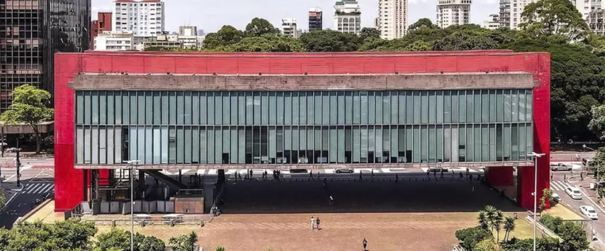
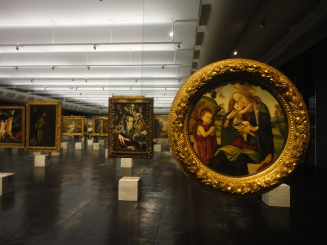
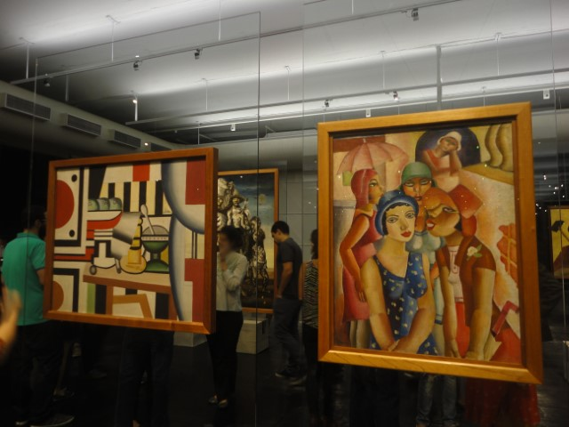
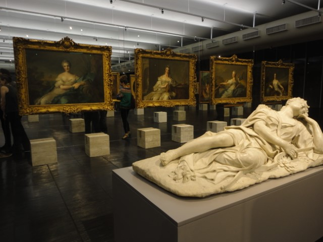
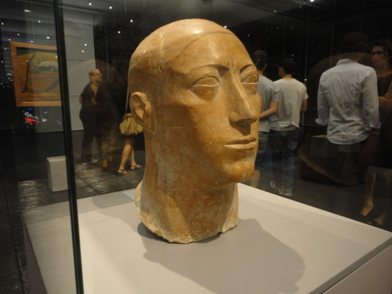

|  |
O Museu de Arte de São Paulo é um museu privado sem fins lucrativos,
fundado em 1947 pelo empresário e mecenas Assis Chateaubriand
(1892-1968), tornando-se o primeiro museu moderno no país. Hoje a coleção do MASP reúne mais de 11 mil obras, incluindo pinturas, esculturas, objetos, fotografias, vídeos e vestuário de diversos períodos, abrangendo a produção europeia, africana, asiática e das Américas. |
||
|---|---|---|---|
| Av. Paulista, 1578 | |||
|  |  |  |  |
| Museu de Arte de São Paulo | |||